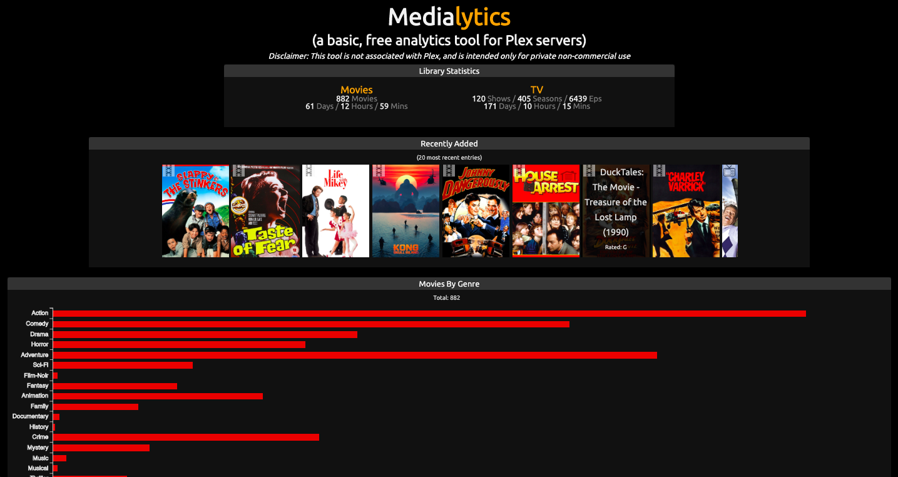
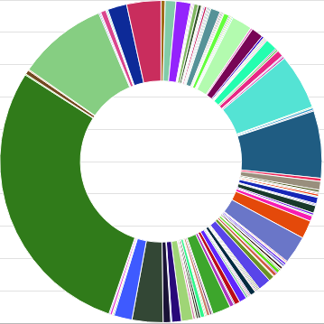
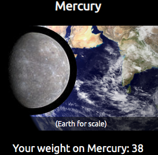
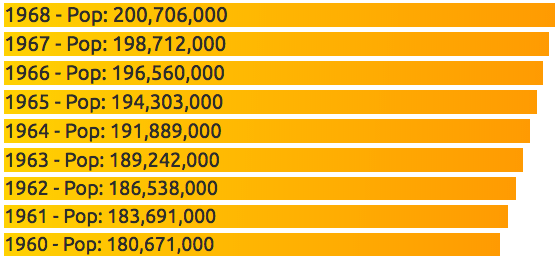
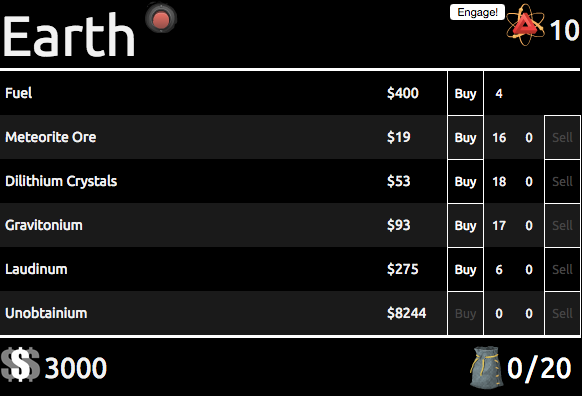
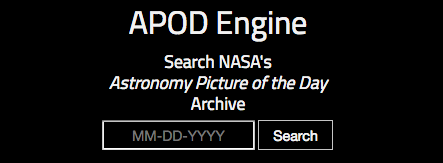

Contact me
Play with my demos

AWS Quicksight Dashboard
I'm an AWS Certified Cloud Practitioner, and one of my specialties is data visualization. AWS provides many powerful tools that allow the quick collection, transformation, and visualization of complex data (often times for free!). To create an interactive dashboard such as the one above, all you need is a database connection (or in this case a CSV hosted on S3) and a free AWS account.
To create this particular dashboard*, I downloaded a free data dump (CSV) of US Congressional Member Social Media Statistics from 2015 through 2020 . The data and its values weren't in the ideal format(s) for the AWS Quicksight visualization tools, so I chose to host the CSV on AWS S3. This allowed me to leverage AWS Glue for ETL calculations, and the transformed data was then imported as a Quicksight dataset. For the analysis, I chose to highlight comparisons in count of posts, followers, shares, and reactions, and I think the resulting dashboard displays some interesting trends and patterns.
* The example above is an embedded PDF (using Google Drive) displaying a single tab of a multi-tab dashboard, (exported from Quicksight) so it doesn't have the on-hover or drilldown interactivity.
Medialytics
Medialytics is a single-page app that shows you information about the content on your Plex server by parsing the XML feed that it generates. There are some nifty charts, library counts and durations, and the big button at the bottom lets you view your content in an easy-to-browse mobile-friendly format.
Data Visualization (Live Demo)
This is a single page that includes multiple examples of data visualization frameworks, such as: Vue.js, D3.js, and Chart.js. I also give a summary of what it's like to develop with each framework, including its strengths and weaknesses.
  3D / VR Solar System
This is a simple A-Frame implementation, which is a client-side JS-based 3D framework. It's specifically designed to workeasily with VR integration, or just simple 3D web applications. It provides a lot of simple constructors and behavior that is more commonly reserved for desktop software / engines (e.g. Unity), such as lightbox effects or spacial geometry.
This demo creates a (scaled) representation of our solar system, including Pluto. I have comments in the code describing how and why I modified certain variables in order to create a realistic but also navigable scene. While it's definitely notable that the A-Frame code is so easily initialized (I had this up and running super fast), it's also worth noting that it's a very small amount of code that generates the entire scene (less than 200 lines of JS + JSON combined).
SpaceTrade (Live Demo)
A small JavaScript game similar to Dope Wars and other resource management games, but also includes a randomized encounter system, a Choose-Your-Own-Adventure mechanic, and some experimental UI elements.
It was recently updated to use the awesome Vue.js for binding the frontend to the backend, which required a ground-up re-write (but I think the code benefited enormously from the addition).
It was a refreshing change to develop this, and I learned (and re-learned) a lot about object/variable manipulation in the process, as well as organizational best practices. I update this from time to time but it will most likely live as a perpetual coding sandbox / work in progress.
APOD Engine (Live Demo)
A single page application that allows you to search for the official NASA Astronomy Picture of the Day for any date.
I'm a space nerd at heart, so this was an interesting project that I actually return to and use from time to time, just for fun. It also features a pure CSS/JS starfield background that's lightweight and modular (which was a fun little project in itself).
The Bachelor Cookbook (Live Demo)
A single page application that feeds (yep) off of the open-source Recipe Puppy API, which is admittedly not quite robust enough to use for a production app but works fine for demo purposes.
What began as an experiment with minimalist API queries ended up as a recipe search engine for poor, lonely men. The idea is to search for recipes that only require the ingredients you have on hand, plus or minus an ingredient or two. Believe it or not, "Water" and "Bread" do return results.